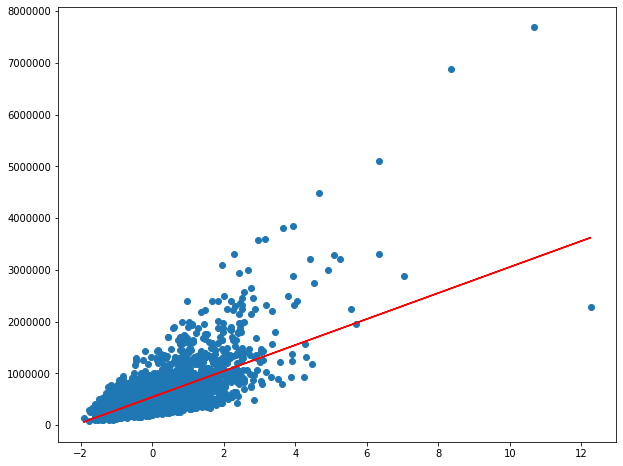
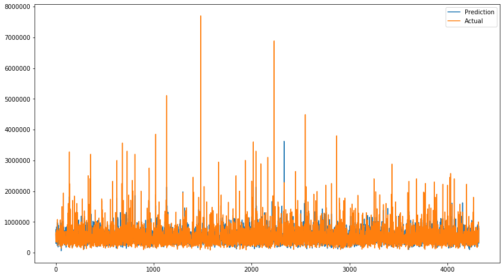

https://www.kaggle.com/harlfoxem/housesalesprediction
import pandas as pd
import numpy as np
import matplotlib.pyplot as plt
import seaborn as sns
house_data = pd.read_csv('datasets/kc_house_data.csv')
house_data.head()
| id | date | price | bedrooms | bathrooms | sqft_living | sqft_lot | floors | waterfront | view | ... | grade | sqft_above | sqft_basement | yr_built | yr_renovated | zipcode | lat | long | sqft_living15 | sqft_lot15 | |
|---|---|---|---|---|---|---|---|---|---|---|---|---|---|---|---|---|---|---|---|---|---|
| 0 | 7129300520 | 20141013T000000 | 221900.0 | 3 | 1.00 | 1180 | 5650 | 1.0 | 0 | 0 | ... | 7 | 1180 | 0 | 1955 | 0 | 98178 | 47.5112 | -122.257 | 1340 | 5650 |
| 1 | 6414100192 | 20141209T000000 | 538000.0 | 3 | 2.25 | 2570 | 7242 | 2.0 | 0 | 0 | ... | 7 | 2170 | 400 | 1951 | 1991 | 98125 | 47.7210 | -122.319 | 1690 | 7639 |
| 2 | 5631500400 | 20150225T000000 | 180000.0 | 2 | 1.00 | 770 | 10000 | 1.0 | 0 | 0 | ... | 6 | 770 | 0 | 1933 | 0 | 98028 | 47.7379 | -122.233 | 2720 | 8062 |
| 3 | 2487200875 | 20141209T000000 | 604000.0 | 4 | 3.00 | 1960 | 5000 | 1.0 | 0 | 0 | ... | 7 | 1050 | 910 | 1965 | 0 | 98136 | 47.5208 | -122.393 | 1360 | 5000 |
| 4 | 1954400510 | 20150218T000000 | 510000.0 | 3 | 2.00 | 1680 | 8080 | 1.0 | 0 | 0 | ... | 8 | 1680 | 0 | 1987 | 0 | 98074 | 47.6168 | -122.045 | 1800 | 7503 |
5 rows × 21 columns
house_data.drop(['id', 'lat', 'long', 'zipcode'], inplace=True, axis=1)
house_data.head()
| date | price | bedrooms | bathrooms | sqft_living | sqft_lot | floors | waterfront | view | condition | grade | sqft_above | sqft_basement | yr_built | yr_renovated | sqft_living15 | sqft_lot15 | |
|---|---|---|---|---|---|---|---|---|---|---|---|---|---|---|---|---|---|
| 0 | 20141013T000000 | 221900.0 | 3 | 1.00 | 1180 | 5650 | 1.0 | 0 | 0 | 3 | 7 | 1180 | 0 | 1955 | 0 | 1340 | 5650 |
| 1 | 20141209T000000 | 538000.0 | 3 | 2.25 | 2570 | 7242 | 2.0 | 0 | 0 | 3 | 7 | 2170 | 400 | 1951 | 1991 | 1690 | 7639 |
| 2 | 20150225T000000 | 180000.0 | 2 | 1.00 | 770 | 10000 | 1.0 | 0 | 0 | 3 | 6 | 770 | 0 | 1933 | 0 | 2720 | 8062 |
| 3 | 20141209T000000 | 604000.0 | 4 | 3.00 | 1960 | 5000 | 1.0 | 0 | 0 | 5 | 7 | 1050 | 910 | 1965 | 0 | 1360 | 5000 |
| 4 | 20150218T000000 | 510000.0 | 3 | 2.00 | 1680 | 8080 | 1.0 | 0 | 0 | 3 | 8 | 1680 | 0 | 1987 | 0 | 1800 | 7503 |
house_data.info()
<class 'pandas.core.frame.DataFrame'>
RangeIndex: 21613 entries, 0 to 21612
Data columns (total 17 columns):
date 21613 non-null object
price 21613 non-null float64
bedrooms 21613 non-null int64
bathrooms 21613 non-null float64
sqft_living 21613 non-null int64
sqft_lot 21613 non-null int64
floors 21613 non-null float64
waterfront 21613 non-null int64
view 21613 non-null int64
condition 21613 non-null int64
grade 21613 non-null int64
sqft_above 21613 non-null int64
sqft_basement 21613 non-null int64
yr_built 21613 non-null int64
yr_renovated 21613 non-null int64
sqft_living15 21613 non-null int64
sqft_lot15 21613 non-null int64
dtypes: float64(3), int64(13), object(1)
memory usage: 2.8+ MB
house_data['date'] = pd.to_datetime(house_data['date'])
house_data['house_age'] = house_data['date'].dt.year - house_data['yr_built']
house_data.drop('date', inplace=True, axis=1)
house_data = house_data.drop('yr_built', axis=1)
house_data['renovated'] = house_data['yr_renovated'].apply(lambda x:0 if x == 0 else 1)
house_data.drop('yr_renovated', inplace=True, axis=1)
house_data[['renovated', 'house_age']].sample(10)
| renovated | house_age | |
|---|---|---|
| 12264 | 0 | 10 |
| 11744 | 0 | 11 |
| 18117 | 0 | 16 |
| 7296 | 0 | 36 |
| 6432 | 0 | 101 |
| 6772 | 0 | 65 |
| 9147 | 0 | 40 |
| 7538 | 0 | 64 |
| 18458 | 0 | 87 |
| 546 | 0 | 23 |
house_data.to_csv('datasets/house_data_processed.csv', index=False)
sns.lmplot('sqft_living', 'price', house_data)
<seaborn.axisgrid.FacetGrid at 0x1a1ec9b490>
sns.lmplot('house_age', 'price', house_data)
<seaborn.axisgrid.FacetGrid at 0x1a21768350>
sns.lmplot('floors', 'price', house_data)
<seaborn.axisgrid.FacetGrid at 0x1a21a6f910>
Scaling dataset and one feature for simple linear regression¶
from sklearn.model_selection import train_test_split
from sklearn.linear_model import LinearRegression
from sklearn.preprocessing import StandardScaler
X = house_data[['sqft_living']]
y = house_data['price']
X.head()
| sqft_living | |
|---|---|
| 0 | 1180 |
| 1 | 2570 |
| 2 | 770 |
| 3 | 1960 |
| 4 | 1680 |
y.head()
0 221900.0
1 538000.0
2 180000.0
3 604000.0
4 510000.0
Name: price, dtype: float64
X_train, X_test, y_train, y_test = train_test_split(X, y, test_size =.2)
scaler = StandardScaler()
X_train = scaler.fit_transform(X_train)
/anaconda3/lib/python3.7/site-packages/sklearn/preprocessing/data.py:645: DataConversionWarning: Data with input dtype int64 were all converted to float64 by StandardScaler.
return self.partial_fit(X, y)
/anaconda3/lib/python3.7/site-packages/sklearn/base.py:464: DataConversionWarning: Data with input dtype int64 were all converted to float64 by StandardScaler.
return self.fit(X, **fit_params).transform(X)
X_test = scaler.transform(X_test)
/anaconda3/lib/python3.7/site-packages/sklearn/preprocessing/data.py:645: DataConversionWarning: Data with input dtype int64 were all converted to float64 by StandardScaler.
return self.partial_fit(X, y)
/anaconda3/lib/python3.7/site-packages/sklearn/base.py:464: DataConversionWarning: Data with input dtype int64 were all converted to float64 by StandardScaler.
return self.fit(X, **fit_params).transform(X)
linear_regression = LinearRegression()
model = linear_regression.fit(X_train, y_train)
y_pred = model.predict(X_test)
df = pd.DataFrame({'test': y_test, 'predicted': y_pred})
df.sample(10)
| test | predicted | |
|---|---|---|
| 19721 | 690000.0 | 877087.515685 |
| 11974 | 750000.0 | 524636.850838 |
| 19841 | 272000.0 | 728842.999402 |
| 15002 | 745000.0 | 777540.381339 |
| 14266 | 400000.0 | 511184.535385 |
| 14349 | 517950.0 | 357828.139230 |
| 18814 | 855000.0 | 567684.260285 |
| 14007 | 539950.0 | 761397.602796 |
| 1209 | 392400.0 | 656469.542269 |
| 8509 | 555000.0 | 645707.689907 |
Regression line¶
plt.figure(figsize=(10, 8))
plt.scatter(X_test, y_test)
plt.plot(X_test, y_pred, c='r')
plt.show()

print("Training score : ", linear_regression.score(X_train, y_train))
Training score : 0.4924462623213741
from sklearn.metrics import r2_score
score = r2_score(y_test, y_pred)
print("Testing score : ", score)
Testing score : 0.49122960410676864
theta_0 = linear_regression.coef_
theta_0
array([251423.12120782])
intercept = linear_regression.intercept_
intercept
539163.4222093696
plt.subplots(figsize=(14,8))
plt.plot(y_pred, label="Prediction")
plt.plot(y_test.values, label="Actual")
plt.legend()
plt.show()

import statsmodels.api as sm
Adding a constant¶
X_train[:5]
array([[ 1. , 1.79484757],
[ 1. , -0.79715013],
[ 1. , 1.21520251],
[ 1. , 0.98553183],
[ 1. , -0.67684644]])
X_train = sm.add_constant(X_train)
X_train[:5]
array([[ 1. , 1.79484757],
[ 1. , -0.79715013],
[ 1. , 1.21520251],
[ 1. , 0.98553183],
[ 1. , -0.67684644]])
model = sm.OLS(y_train, X_train).fit()
print(model.summary())
OLS Regression Results
==============================================================================
Dep. Variable: price R-squared: 0.492
Model: OLS Adj. R-squared: 0.492
Method: Least Squares F-statistic: 1.677e+04
Date: Mon, 23 Sep 2019 Prob (F-statistic): 0.00
Time: 08:11:32 Log-Likelihood: -2.3979e+05
No. Observations: 17290 AIC: 4.796e+05
Df Residuals: 17288 BIC: 4.796e+05
Df Model: 1
Covariance Type: nonrobust
==============================================================================
coef std err t P>|t| [0.025 0.975]
------------------------------------------------------------------------------
const 5.392e+05 1941.308 277.732 0.000 5.35e+05 5.43e+05
x1 2.514e+05 1941.308 129.512 0.000 2.48e+05 2.55e+05
==============================================================================
Omnibus: 11046.670 Durbin-Watson: 1.985
Prob(Omnibus): 0.000 Jarque-Bera (JB): 309827.681
Skew: 2.624 Prob(JB): 0.00
Kurtosis: 23.063 Cond. No. 1.00
==============================================================================
Warnings:
[1] Standard Errors assume that the covariance matrix of the errors is correctly specified.
theta_0, intercept
(array([251423.12120782]), 539163.4222093696)